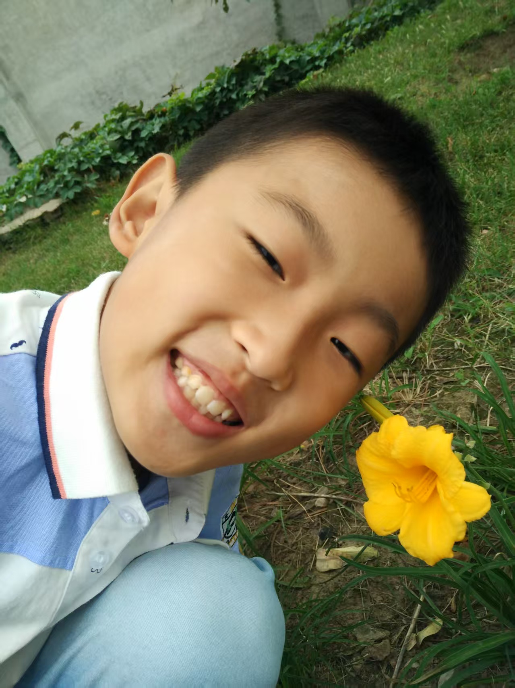

机器学习
结合数学基础与课程练习，逐步理解模型、训练过程与实验方法。

山东大学 · 计算机科学与技术本科生
关注机器学习与数据挖掘，喜欢从数据中寻找数学规律，再用代码把想法变成实践。
我就读于山东大学计算机科学与技术学院，目前是计算机科学与技术专业大二学生。我对机器学习、数据挖掘，尤其是聚类算法与推荐系统感兴趣，希望在本科阶段逐步训练论文阅读、实验设计与工程实现能力。
我使用 Python 和 C/C++ 编程，学习 Git、Linux 与服务器操作，也正在搭建自己的阿里云个人网站。学习之外，我喜欢篮球和羽毛球。
个人介绍更新于 2026 年 10 月。
使用 C/C++、Python 编程，使用过 pandas、matplotlib 进行数据处理与可视化。
高等数学、线性代数、概率统计与离散数学，为理解算法和分析数据打下基础。
学习过吴恩达 Machine Learning 课程并完成部分练习，持续探索机器学习与数据挖掘。
使用 Git 进行版本控制，掌握基础 Linux 命令与服务器操作，实践阿里云个人网站搭建。
从正在做的事情开始，逐步积累作品
当前感兴趣的主题，后续逐步补充学习笔记与实验记录
结合数学基础与课程练习，逐步理解模型、训练过程与实验方法。
关注如何从数据中发现规律，以及聚类方法背后的数学直觉。
希望进一步探索推荐算法，把数据分析与工程实现结合起来。
欢迎交流编程学习、机器学习与项目实践。
查看我的公开资料与代码仓库。
github.com/lywcoder ↗